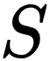
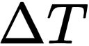
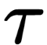

Milý studente, milá studentko,
víme, že studium fyziky umí být občas dřina. Věříme ale, že taková, co se vyplatí.
Děsí i Tebe pohled na následující vzoreček?
Koho ne, že? Všechna ta řecká písmena, konstanty...
Přitom jde o jednoduchý popis toho, jak teplo projde konkrétním materiálem o konkréní ploše, tloušce, rozdílu teplot prostředí, ve kterých se materiál nachází a doby, za kterou průchod tepla měříme.
Pojďme si projít jednotlivé proměnné podrobněji. (Můžeš do nich zkusti dosadit vlastní hodnoty, ať vidíš, jak se vzorec chová.)
 je součinitel tepelné vodivosti. Jde o experimentálně určenou konstantu, která udává, jak daný materiál vede teplo. Zkus zapátrat na internetu a napiš součinitel tepelné vodivosti pro vybraný materiál:
je součinitel tepelné vodivosti. Jde o experimentálně určenou konstantu, která udává, jak daný materiál vede teplo. Zkus zapátrat na internetu a napiš součinitel tepelné vodivosti pro vybraný materiál:
 je plocha (obsah) přes kterou může teplo unikat. Zvol si zkušební hodnotu plochy materiálu, který počítáš:
m²
 je rozdíl teplot dvou prostředí, které materiál odděluje. Zvol si tuto hodnotu (ve stupních Celsia nebo Kelvinech):
°C
 je tloušťka materiálu oddělující prostředí o různých teplotách. Zvol si také tloušťku materiálu:
je tloušťka materiálu oddělující prostředí o různých teplotách. Zvol si také tloušťku materiálu:
m
 je doba, po kterou materiál vystavujeme rozdílu teplot. Zvol si časový interval v sekundách:
s
Teplo, které projde Tvým zvoleným materiálem je
Q = tvuj_vysledek J.
Teď zkus využít pomoc Krutinova automatického počtáře a vypočítej prostup tepla u některých stavebních materiálů.